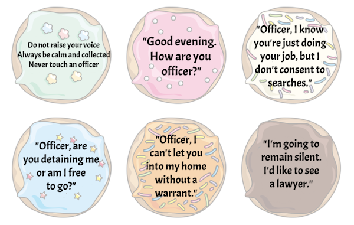

When I was 5, I saw the Karate Kid. And I saw that bad guys could beat me up, and I had no recourse if I didn't know karate. I promptly signed up for martial arts classes.
I had a similar moment a few years ago, when I saw this video of police lying to someone they pulled over. The police try to say that it is against the law to film the police. Turns out that was a lie, and fortunately the person they were lying to was a lawyer, and knew that.
According to law firm Roth Davies:
Although the police are allowed to lie to you, it should go without saying that you cannot lie to the police.
So, we can't trust police officers to inform us of our rights. We simply need to know what they are. Here were my favorite resources for getting informed.
Law professor James Duane makes the case that it's never in your interest to talk to police, even if you're innocent.
The lawyers at flexyourrights.org put together "10 Rules for Dealing with Police". It covers your rights depending on contexts, and suggests some one-liners that you can use.
All this was a lot to remember, so I made a cheat sheet in the form of some donuts to print and leave in your glovebox.
As Law Professor James Duane argues, the most important tip is to never talk to the police. Use your Fifth Amendment right that "No person... shall be compelled in any criminal case to be a witness against himself
Just say,
“I’m going to remain silent. I’d like to see a lawyer.”
Police have a tough job. They are on the lookout for any sign of danger. Make it clear that you are a sane, reasonable person. Keep your hands visible at all times. Avoid the element of surprise.
If you have any weapons or potentially dangerous items on you, keep your hands visible at all times and inform the officer. Inform the officer of your every move, if you need to reach for anything (your identification, your registration, etc.).
Be calm and collected. Do not raise your voice. Say,
“Good {morning, evening}. How are you officer?”
The Fourth Amendment protects you from unreasonable search and seizure in your house.
“The right of the people to be secure in their persons, houses, papers, and effects, against unreasonable searches and seizures, shall not be violated...”
If an officer arrives at your house, you do not need to let them in unless they have a valid search warrant. You have a right to ask them to show you.
Without a warrant, the officer may still ask if they can come in. If you allow them to enter, you have voluntarily waived your Fourth Amendment right.
Instead say,
“Officer, I do not give permission for you to enter my home without a warrant.”
If you are pulled over in your car, you have less protection than when you are in your house. Police may search your car if they have probable cause. From the link, visible contraband, the smell of marijuana (for not yet legalized states), and the admission of guilt are examples of probable cause. Minor traffic violations like speeding, broken lights, expired registration are not considered probable cause. Note that probable cause and how it is interpreted will differ in each jurisdiction.
Without probable cause, the officer may still ask if they can take a look in your car. If you say yes, you have voluntarily waived your right. Police officers are not required to inform you of your rights before asking you to consent to a search.
If a police officer searches your car over your objection, your attorney can argue that any evidence found during the search was discovered through an illegal search and should be thrown out of court. This doctrine is called “fruit of the poisonous tree” and refers to evidence that has been obtained illegally. Say,
“Officer, I know you’re just doing your job, but I don’t voluntarily consent to a search of my car.”
If you have a prolonged interaction with the police and you would like to leave, you may be allowed to! Say,
“Officer, are you detaining me or am I free to go?”
This is a good choice of wording because an officer cannot detain you without reasonable suspicion. The officer must be able to put their reasonable suspicion into words. Repeat the question calmly until you are free to go.
If they are detaining you, they must make it clear that you are not free to go and that you are in police custody. If you are not free to go, the police must read you your Miranda Warning confirming that you have a right to remain silent; anything you say can be used against you in a court of law; you have the right to an attorney during questioning; and if you cannot afford a lawyer, one will be appointed for you if you so desire.
Read more at https://www.flexyourrights.org/faqs/ and https://waterprotectorlegal.org/rights-tips-interacting-law-enforcement/